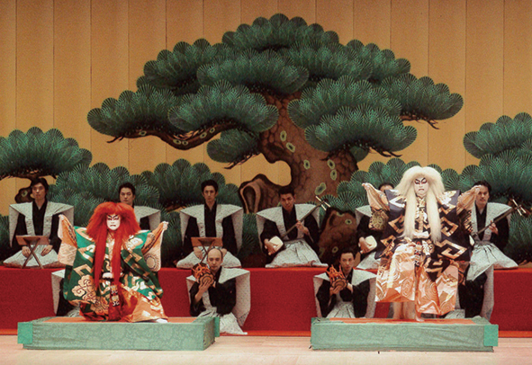
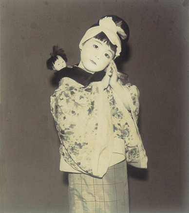
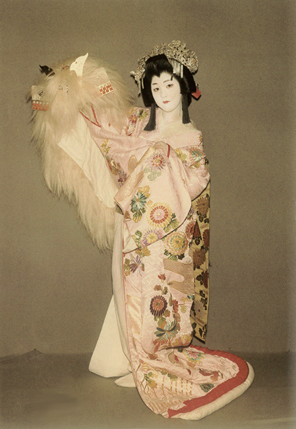
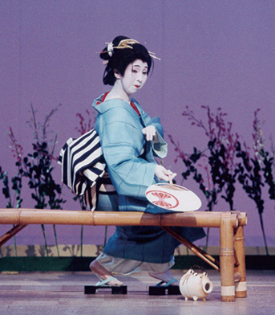

毎年一回、春ごろにささやかな発表会を
横浜能楽堂リハーサル室で開催しています。
この日のために生徒さんたちは、
みなさん一年をかけて練習します。
桜華会に参加することで、
成功体験を通して自信がもて、
自己肯定感を高めることができます。
【稽古日】
毎週水・木・土 9:30〜17:00
上記以外は相談に応じます。
【月謝】
小学生：8,000円
大人(中学生以上)：10,000円
入会金：10,000円
稽古月4回、振替レッスン対応いたします。
手ぶらで体験レッスンいたします。
2,500円（ただし、浴衣・足袋貸し出し料および着付け料含みます）
ご入会される場合は、入会金に充当いたします。
代 表
花柳 桜美世
(はなやぎ おうみよ)
プロフィール
東京青山で花柳美世寿恵師に師事。
東京女学館高等学校1年で花柳流名取を許される。
三越劇場にて「京鹿子娘道成寺」で名披露目。
慶應義塾大学文学部入学後、長唄研究会に入会(卒業後もOGとして演奏活動)。
結婚後、夫の海外勤務にともない海外生活を送り、’84年帰国後、現在の住所である横浜に住む。
40歳で花柳流師範。
国立劇場にて「鷺娘(さぎむすめ)」で名披露目。
花柳芳次郎塾（現・壽輔師）に学び、「おせん」を国立劇場にて発表。
2011年、柳栄会 「連獅子」(親獅子)。仔獅子は藤村鶴知枝さま。



